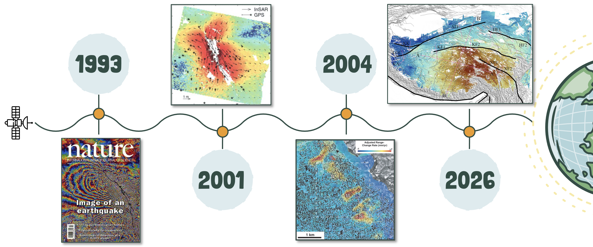

Key Papers
Disclaimer
This page was assembled by Claude (Anthropic) drawing on Dani Lindsay's thesis work, research notes, and guidance. It has not yet been through a final review — if you see this notice, treat the content as a useful starting point but verify anything you plan to cite or act on.
From the first radar images to modern time series algorithms — key papers roughly chronologically. Papers in bold are ones any InSAR practitioner should know.

Selected milestones: Landers 1992 — first earthquake captured and studied in detail with InSAR (Massonnet et al., 1993); Hector Mine 1999 Mw 7.1 — first 3D displacement mapping of an earthquake (Fialko & Simons, 2001); first slow-moving landslides detected in the Berkeley Hills (Hilley et al., 2004); first high-resolution present-day surface velocity field for the Tibetan Plateau and surrounding region (Wright et al., 2026).
| Year | Authors | Paper | DOI | Significance |
|---|---|---|---|---|
| 1974 | Graham | Synthetic interferometer radar for topographic mapping | — | Early theoretical foundation for SAR interferometry |
| 1986 | Gabriel & Goldstein | Crossed orbit interferometry: theory and experimental results from SIR-B | — | First demonstration of SAR interferometry from orbit |
| 1989 | Gabriel, Goldstein & Zebker | Mapping small elevation changes over large areas: differential radar interferometry | — | First use of InSAR to map surface deformation (agricultural subsidence) |
| 1993 | Massonnet et al. | The displacement field of the Landers earthquake mapped by radar interferometry | DOI | First interferogram of a major earthquake — announced tectonic InSAR to the world |
| 1996 | Zebker & Goldstein | Topographic mapping from interferometric SAR observations | — | Established methods for DEM generation from InSAR |
| 1997 | Zebker et al. | Atmospheric effects in interferometric SAR surface deformation and topographic maps | — | Quantified the atmospheric noise problem that still challenges the field |
| 1998 | Ferretti, Prati & Rocca | Nonlinear subsidence rate estimation using permanent scatterers in differential SAR interferometry | — | Precursor to PSInSAR — first use of persistent point targets |
| 2000 | Ferretti, Prati & Rocca | Nonlinear subsidence rate estimation using permanent scatterers | — | PSInSAR — permanent scatterer time series |
| 2000 | Bürgmann, Rosen & Fielding | Synthetic aperture radar interferometry to measure Earth's surface topography and its deformation | DOI | Comprehensive review — the standard reference for InSAR geodesy |
| 2002 | Berardino et al. | A new algorithm for surface deformation monitoring based on small baseline differential SAR interferograms | DOI | SBAS — small baseline time series algorithm that MintPy and LiCSBAS are built on |
| 2002 | Pritchard & Simons | A satellite geodetic survey of large-scale deformation of volcanic centres in the central Andes | DOI | Landmark systematic survey of volcanic deformation across an entire arc |
| 2004 | Wright, Parsons & Lu | Toward mapping surface deformation in three dimensions using InSAR | DOI | Framework for combining ascending + descending tracks to recover 3D motion |
| 2007 | Hooper et al. | A new method for measuring deformation on volcanoes and other natural terrains using InSAR persistent scatterers | — | StaMPS — PS time series for natural terrain (no urban infrastructure needed) |
| 2012 | Fattahi & Amelung | InSAR uncertainty due to orbital errors | — | Orbital ramp correction in time series |
| 2019 | Yunjun, Fattahi & Amelung | Small baseline InSAR time series analysis: Unwrapping error correction and noise reduction | DOI | MintPy — the current standard open-source SBAS time series tool |
| 2020 | Morishita et al. | LiCSBAS: An open-source InSAR time series analysis package integrated with the LiCSAR automated Sentinel-1 InSAR processor | — | LiCSBAS — time series integrated with automated COMET processing |
| 2021 | Zheng et al. | Fast atmospheric correction for InSAR using ERA5 reanalysis data | — | Operational tropospheric correction |
This table is a starting point
Focused on tectonic, slow-slip, and landslide applications. Notable areas not covered here include DEM generation and ice sheet applications — the full history of InSAR is broader.